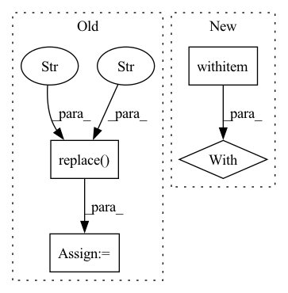

Pattern ID :16356

Before Change
"_x" + str(upscale_factor) +
".png")
else:
result_path = (img.replace(".png","") +
"_" + AI_model +
"_x" + str(upscale_factor) +
".png")
After Change
tiles = slice_image(img, num_tiles)
// 4) upscale each tiles
with torch.no_grad():
for tile in tiles:
tile_adapted = adapt_image_for_deeplearning(tile.filename)
tile_adapted = tile_adapted.to(device, non_blocking = True)
tile_upscaled = model(tile_adapted)
In pattern: SUPERPATTERN
Frequency: 4
Non-data size: 4
Instances
Fragment ID: 55176139
Project Name: djdefrag/qualityscaler
Commit Name: 66cef0855cfbe41b27938a88cd316575f61f5507
Time: 2022-05-04
Author: jjluca96@gmail.com
File Name: QualityScaler.py
M Class Name: AnonimousClass
N Class Name: AnonimousClass
M Method Name: torch_AI_upscale_video_frames(4)
N Method Name: torch_AI_upscale_video_frames(4)
M Parent Class:
N Parent Class:
M File Name: QualityScaler.py
N File Name: QualityScaler.py
M Start Line: 620
M End Line: 673
N Start Line: 416
N End Line: 465
'>
Before Change
//chooosig a phrase
laudo = self.clr_frame.iloc[idx, 5]
// ls_laudo = ast.literal_eval(ls_laudo)
laudo = laudo.replace("\n", "")
ls_laudo = laudo.split(".")
if "" in ls_laudo:
ls_laudo.remove("")
phrase = random.choice(ls_laudo)
After Change
text_path = os.path.join(self.text_root_dir,
self.clr_frame.iloc[idx, self.text_col]
)
with open(text_path) as f:
content = f.readlines()
content = content.replace("\n", "")
ls_text = content.split(".")
if "" in ls_text:
'>
Fragment ID: 55176141
Project Name: edreismd/convirt-pytorch
Commit Name: 972e2647b0394954fb22376021a5441bfcf6fe88
Time: 2021-01-18
Author: edu.pontes@gmail.com
File Name: dataloader/dataset.py
M Class Name: ClrDataset
N Class Name: ClrDataset
M Method Name: __getitem__(2)
N Method Name: __getitem__(2)
M Parent Class: Dataset
N Parent Class: Dataset
M File Name: dataloader/dataset.py
N File Name: dataloader/dataset.py
M Start Line: 49
M End Line: 63
N Start Line: 46
N End Line: 78
'>
Before Change
"_x" + str(upscale_factor) +
".png")
else:
result_path = (img.replace(".png","") +
"_" + AI_model +
"_x" + str(upscale_factor) +
".png")
After Change
tiles = slice_image(img, num_tiles)
// 4) upscale each tiles
with torch.no_grad():
for tile in tiles:
tile_adapted = adapt_image_for_deeplearning(tile.filename)
tile_adapted = tile_adapted.to(device, non_blocking = True)
tile_upscaled = model(tile_adapted)
'>
Fragment ID: 55176143
Project Name: djdefrag/qualityscaler
Commit Name: 66cef0855cfbe41b27938a88cd316575f61f5507
Time: 2022-05-04
Author: jjluca96@gmail.com
File Name: QualityScaler.py
M Class Name: AnonimousClass
N Class Name: AnonimousClass
M Method Name: torch_AI_upscale_multiple_images(4)
N Method Name: torch_AI_upscale_multiple_images(4)
M Parent Class:
N Parent Class:
M File Name: QualityScaler.py
N File Name: QualityScaler.py
M Start Line: 563
M End Line: 616
N Start Line: 364
N End Line: 414